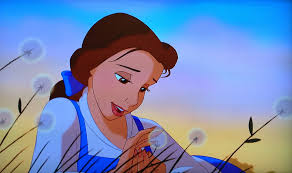
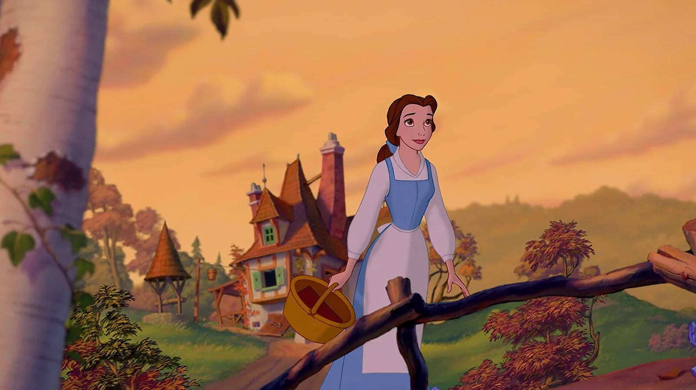
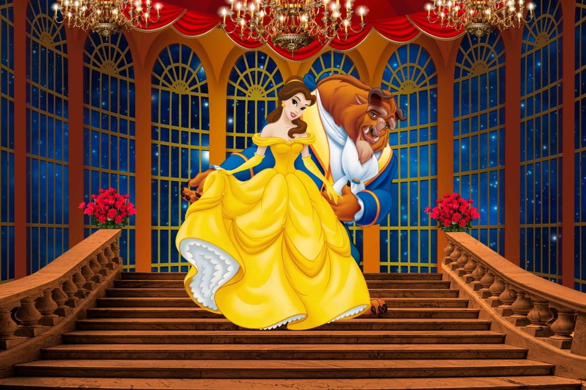
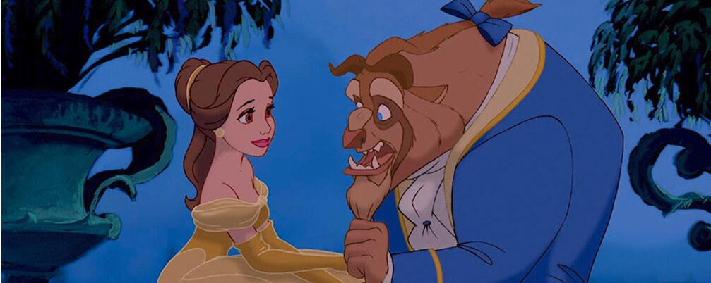
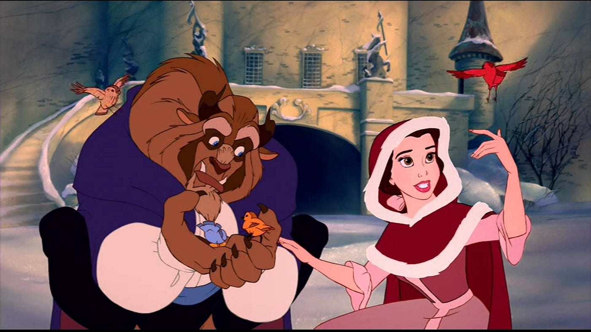
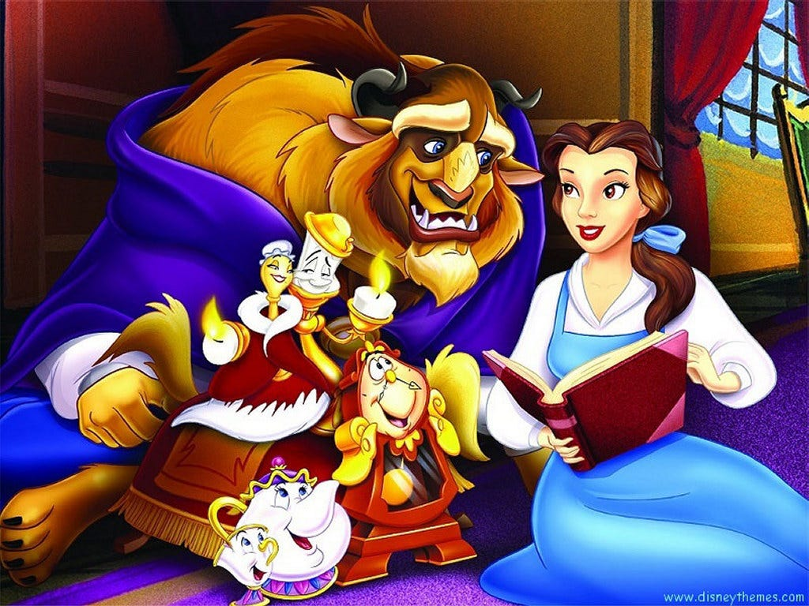
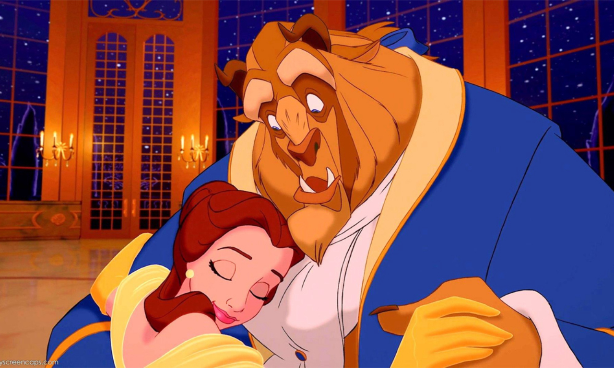

Bella em um belo dia percebeu que a Fera nao estava em casa, entao foi preocura-lo na floresta

Ela caminhou pela floresta mas infelismente estava começando a escurecer

Depois de muito tempo andando bella encontra a fera colhendo flores

Ela vai ate ele e o comprimenta e começa a ajuda-lo

Eles colhem as flores e decidem voltam pra casa antes de escurecer

Eles chegam em casa e colocam as flores na mesa

E eles vivem felizes